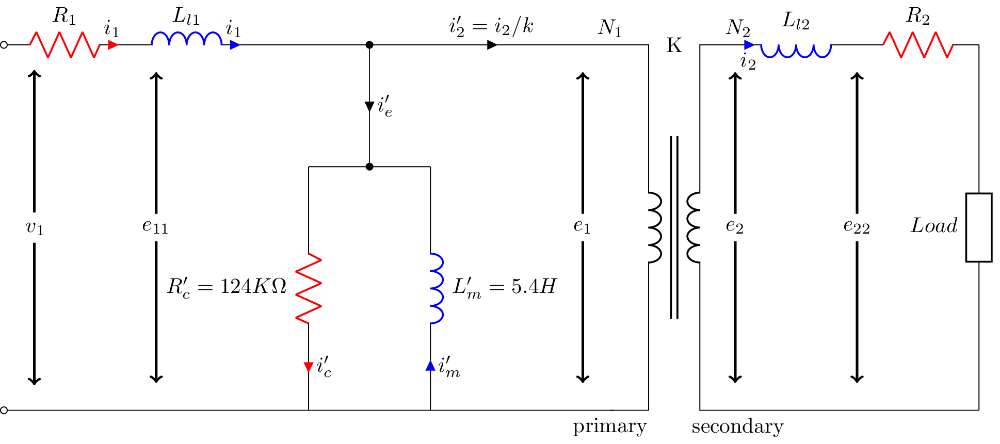

\documentclass{standalone}
\usepackage[american]{circuitikz}
\usetikzlibrary{calc,arrows}
\usepackage{graphicx}
\usepackage{mathrsfs}
\usepackage{latexsym,amssymb,amsmath}
\newcommand{\equal}{=}
\begin{document}
\begin{circuitikz}
\draw (0,6) to [open,l=$v_1$,o-o] (0,0)
(0,6) to [R,i>=$i_1$, l^= $R_{1}$, color=red] (2,6)
(2,6) to [L,i>=$i_1$,l^= $L_{l1}$, color=blue] (4,6)
(4,6) -- (6,6)
(6,6) to [short,i=$i^\prime_e$,*-*] (6,4)
(6,4) -- (5,4)
(6,4) -- (7,4)
(5,4) to [R,i^>=$i^\prime_c$, l_= $R^{\prime}_c\equal 124K \Omega$, color=red] (5,0)
(7,4) to [L,i^<=$i^\prime_m$, l^= $L^{\prime}_m \equal 5.4 H$, color=blue] (7,0)
(6,6) to [short,i=$i^\prime_2 \equal i_2 / k$] (10,6)
(0,0) -- (10,0)
(11,6) node [yscale =2.857,transformer core](T){} % reminded by @PaulGessler, thanks.
(T.A1) node[above] {$N_1$}
(T.A2) node[below] {primary}
(T.B1) node[above] {$N_2$}
(T.B2) node[below] {secondary}
(T.base) node{K}
(T.B1) -- (12,6)
(14,6) to [L,i^<=$i_2$, l_= $L_{l2}$, color=blue] (12,6)
(14,6) to [R, l^= $R_{2}$, color=red] (16,6)
(16,6) to [generic, l_=${Load}$](16,0)
(T.B2) -- (16,0)
% (4,0) -- (0,0)
% (4,4) to [R,i^>=$\phi_2$, l^= $\mathscr{R}_{2}$,v_>=$\mathscr{F}_2$, color=blue] (4,0)
% (4,4) to [R,l^= $\mathscr{R}_{3}$,v_>=$\mathscr{F}_3$, color=red] (8,4)
% (8,4) to [R,i^>=$\phi_3$, l^= $\mathscr{R}_{g}$,v_>=$\mathscr{F}_g$, color=cyan] (8,0)
% (8,0) to [R, l^= $\mathscr{R}_{4}$,v_>=$\mathscr{F}_4$, color=green] (4,0);
% \draw[thin, <-, >=triangle 45] (6,2) node{$\phi_3$} ++(-90:1) arc (-90:100:1);
% \draw[thin, <-, >=triangle 45] (2,2) node{$\phi_2$} ++(-90:1) arc (-90:100:1);
% \node (phi) at (4.25,0.5) {$\phi_2$};
% \draw[-stealth] (4.25,2.5) to [bend left=90] (phi);
;
\coordinate (V1up) at (0.5,6);
\coordinate (V1mid1) at (0.5,3.25);
\coordinate (V1mid2) at (0.5,2.75);
\coordinate (V1down) at (0.5,0);
\node (e) at (2.5,3) {$e_{11}$};
\node (eend) at (9.5,3) {$e_{1}$};
\node (e2) at (12,3) {$e_{2}$};
\node (e3) at (14,3) {$e_{22}$};
\draw[->,black,very thick] (e) -- ($(e)!.85!(2.5,6)$); % 1 cm before end terminal
\draw[->,black,very thick] (e) -- ($(e)!.85!(2.5,0)$); % 1 cm before start terminal
\draw[->,black,very thick] (eend) -- ($(eend)!.85!(9.5,6)$); % 1 cm before end terminal
\draw[->,black,very thick] (eend) -- ($(eend)!.85!(9.5,0)$); % 1 cm before start terminal
\draw[->,black,very thick] (e2) -- ($(e2)!.85!(12,6)$); % 1 cm before end terminal
\draw[->,black,very thick] (e2) -- ($(e2)!.85!(12,0)$); % 1 cm before start terminal
\draw[->,black,very thick] (e3) -- ($(e3)!.85!(14,6)$); % 1 cm before end terminal
\draw[->,black,very thick] (e3) -- ($(e3)!.85!(14,0)$); % 1 cm before start terminal
\draw[->,black,very thick] (V1mid2) -- ($(V1mid2)!.85!(V1down)$); % 1 cm before end terminal
\draw[->,black,very thick] (V1mid1) -- ($(V1mid1)!.85!(V1up)$); % 1 cm before start terminal
\end{circuitikz}
\label{fig:q1fig}
\end{document}